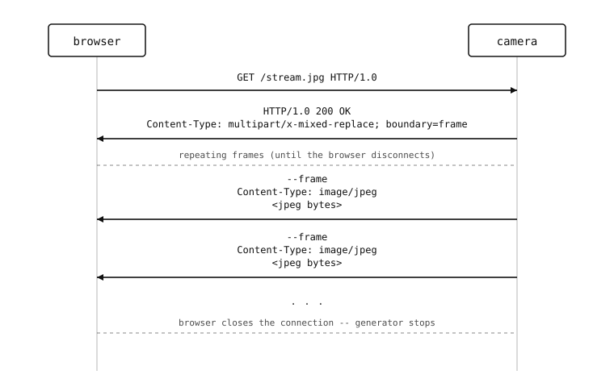

10.3. 라이브 스트리밍 – 단일 시청자¶
브라우저는 멀티파트 Motion JPEG (MJPEG) 스트림을 <img> 태그 안에서 직접 렌더링할 수 있습니다. 브라우저에 절대 끝나지 않는 하나의 HTTP 응답을 건네주고, 멀티파트 경계로 구분된 JPEG를 쓰면, 브라우저는 각 프레임이 도착하는 대로 표시합니다.

통신 방식은 간단합니다. 응답 헤더 Content-Type: multipart/x-mixed-replace; boundary=frame 하나, 그다음 --frame 라인, Content-Type: image/jpeg, 빈 줄, JPEG 바이트, \r\n 을 반복합니다. <img> 가 제거되거나 탭이 닫히면 브라우저가 연결을 닫습니다.
10.3.1. 블로킹 없이 캡처하기¶
지금까지 사용한 블로킹 방식의 csi0.snapshot() 은 센서가 프레임을 전달할 때까지 전체 이벤트 루프를 멈춥니다. 요청 하나가 스냅샷 하나를 발생시키고 다른 것이 실행되지 않을 때는 괜찮았습니다. 하지만 스트림이 열리면 서버는 다음 프레임을 캡처하는 동안에도 다른 요청을 계속 처리해야 합니다. 즉, 캡처 호출이 센서를 기다리는 동안 이벤트 루프에 양보 해야 합니다.
이 패턴은 csi.CSI.snapshot() 을 논블로킹 모드로 폴링하고 폴링 사이에 코루틴을 잠재우는 얇은 AsyncCSI 래퍼입니다. asyncio 장에서 AsyncCSI 를 통해 이 패턴을 살펴봤습니다. 지금은 스크립트에 인라인으로 넣습니다:
import asyncio
class AsyncCSI:
def __init__(self, *args, **kwargs):
self._csi = csi.CSI(*args, **kwargs)
def __getattr__(self, name):
return getattr(self._csi, name)
async def snapshot(self):
while True:
img = self._csi.snapshot(blocking=False)
if img is not None:
return img
await asyncio.sleep_ms(0)
그 밖의 모든 CSI 메서드(reset(), pixformat(), framesize(), gain_db(), …)는 __getattr__ 을 통해 전달됩니다. snapshot() 만이 폴링 사이에 이벤트 루프가 다른 코루틴을 스케줄링할 수 있게 해주는 await 가능한 버전으로 교체됩니다.
스냅샷 라우트의 평범한 csi.CSI() 를 AsyncCSI() 로 교체합니다:
csi0 = AsyncCSI()
csi0.reset()
csi0.pixformat(csi.RGB565)
csi0.framesize(csi.QVGA)
10.3.2. 스트리밍 본문은 클래스 기반 반복자입니다¶
스트리밍 응답 본문은 microdot가 async for 로 반복하여 양보되는 각 청크를 소켓으로 보내는 객체일 뿐입니다. CPython에서는 이것이 보통 비동기 제너레이터 함수, 즉 yield 가 있는 async def 입니다. MicroPython은 이를 지원하지 않습니다:
참고
MicroPython의 asyncio 는 비동기 제너레이터 함수(async def name(): ... yield ...)를 지원하지 않습니다. 스트리밍 응답 본문은 __aiter__ 가 self 를 반환하고 __anext__ 가 async def 로 정의된 클래스 기반 비동기 반복자여야 합니다.
MJPEG 스트림의 경우, 이는 __anext__ 가 프레임 하나를 await하고 이를 멀티파트 래퍼로 감싸 반환하는 클래스를 의미합니다:
BOUNDARY = b'frame'
class FrameStream:
def __aiter__(self):
return self
async def __anext__(self):
img = await csi0.snapshot()
jpeg = bytes(img.compress(quality=85).bytearray())
return (b'--' + BOUNDARY + b'\r\n'
b'Content-Type: image/jpeg\r\n\r\n'
+ jpeg + b'\r\n')
@app.get('/stream.jpg')
async def stream(request):
return Response(
body=FrameStream(),
headers={
'Content-Type':
b'multipart/x-mixed-replace; boundary=' + BOUNDARY,
},
)
인스턴스는 요청마다 새로 생성되므로, 연결된 각 클라이언트는 자신만의 반복자를 갖습니다. 브라우저가 연결을 끊으면 microdot는 __anext__ await를 멈추고 반복자는 가비지 컬렉션됩니다.
참고
JPEG를 둘러싼 bytes(...) 래핑은 방어적입니다. bytearray() 는 카메라의 이미지 버퍼에 대한 뷰를 반환하며, 다음 snapshot() 호출이 그 버퍼를 제자리에서 다시 씁니다. bytes 로 감싸면 JPEG를 밖으로 복사하므로, 다음번에 __anext__ 가 실행될 때까지 쓰기 작업의 플러시가 끝나지 않더라도 microdot가 쓰는 중인 청크가 안정적으로 유지됩니다.
10.3.3. asyncio 안에서 서버 실행하기¶
앞서의 app.run(host=..., port=...) 호출은 블로킹입니다. MJPEG 핸들러는 AsyncCSI 스냅샷 폴링과 루프를 공유해야 하므로, app.run 을 asyncio.run() 안의 start_server() 로 교체합니다:
async def main():
await app.start_server(host='0.0.0.0', port=80)
asyncio.run(main())
asyncio.run() 래퍼는 서버가 여러 태스크 중 하나가 되도록 합니다. 그러면 main 코루틴은 캡처, 모션 검출, 그리고 HTTP 서버와 루프를 공유해야 하는 그 밖의 모든 것을 띄우기에 자연스러운 자리가 됩니다.
10.3.4. 한 번에 한 명의 시청자¶
연결된 각 클라이언트가 자신만의 FrameStream 반복자를 실행하므로, 모든 클라이언트가 각자의 csi0.snapshot() 호출을 발생시킵니다. 브라우저 두 개는 프레임 간격마다 두 번의 센서 읽기를, 세 개는 세 번을, 식으로 늘어납니다. 센서는 자신의 프레임 레이트보다 빠르게 프레임을 전달할 수 없으므로 요청들이 서로 뒤에 줄을 서고 모두의 스트림이 느려집니다.
해결책은 하나의 프레임을 여러 리더에게 게시하는 단일 공유 캡처 루프입니다.